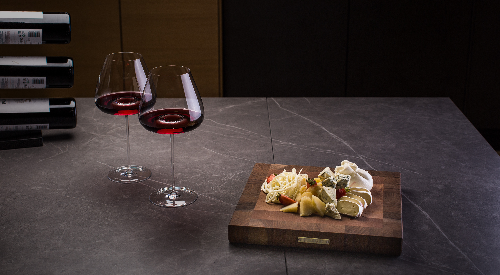
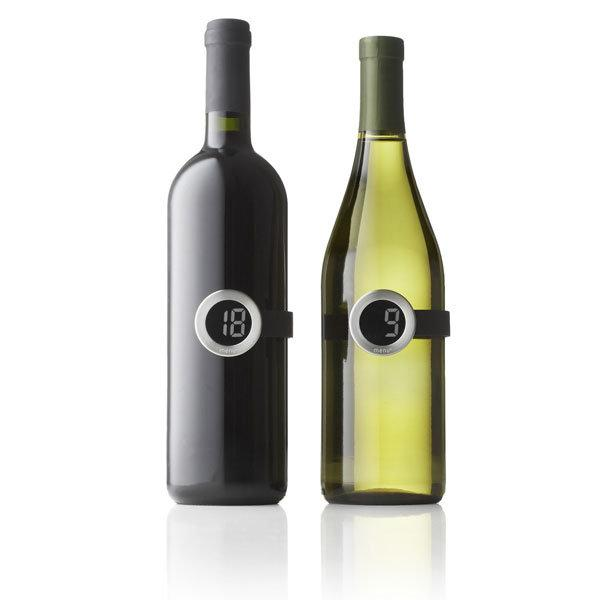
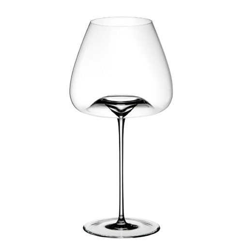

Бокалы для вина BORK HW501
Почему у бокалов разная форма?
Выбор формы зависит от того, какое вино вы собираетесь пить:
- Белое
- Красное
- Игристое
Ощущения
При дегустации вина очень важен аромат который мы вдыхаем и вкус который мы ощущаем языком. Форма бокала призвана усилить нужные ноты аромата и вкуса, смягчая при этом другие.
- кончик языка реагирует на сладкое.
- боковые стороны языка воспринимают кислый вкус.
- зауженный верхний край бокала концентрирует аромат.
Именно форма бокала влияет на то, с какой областью языка вино будет контактировать и как раскроется аромат.
Для красного вина используют большие бокалы на высокой ножке, с чашей в форме тюльпана со слегка зауженным верхним краем.
Такая форма помогает насыщенным красным винам полностью раскрыться.
Популярны для красных сортов вина бокалы, которые называются Бургундия и Бордо.
Температура подачи красного вина 18 градусов.
Для белого вина используют бокалы, похожие по форме, как под красное, но меньшего размера и объема чаши, с более низкой ножкой.
Популярна уменьшенная форма бокала – Бордо.
Подавать белое вино правильно охлажденным до 9 - 12 градусов.
Бокал для вина BORK HW500
- Объем – 640 мл.
- Хрустальное стекло
- Ручная выдувка
- Цельнотянутая ножка
Бокал предназначен для:
- Белых и красных вин Бургундии
- Выдержанных красных вин
- Выдержанных вин из Пьемонта
- Насыщенных розовых вин
- Винтажных шампанских вин
Аргументы для продажи:
- Уникальная форма бокалов с углублением в центре, позволяет насыщать вино кислородом во время наливания вина. За счёт завихрений в бокале, вино быстрее раскрывается и набирает полную силу непосредственно перед употреблением.
- Бокалы производятся на старейшей мануфактуре в Венгрии, методом ручной выдувки. Именно благодаря ручному производству каждый бокал является уникальным.
- Материал, из которого выполнены бокалы – «Кристалин» содержит не менее 10% свинца, что делает его мягче обычного стекла и в то же время тверже хрусталя. Бокалы из кристалина отличаются красивым блеском и приятной тяжестью, отлично подходят для повседневного использования и моются в посудомоечной машине.
- Бокалы созданы в сотрудничестве с известным сомелье Сильвио Ницше, который имеет богатый опыт работы с лучшими ресторанами, в том числе отмеченными Guide Michelin.
- Девиз создания бокалов: «Вино – это не сложный продукт! Для любого человека»